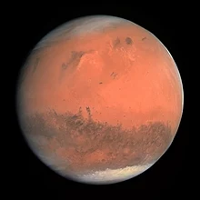
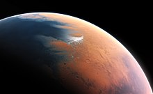
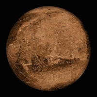

MARS



Mars is the fourth planet from the Sun and the second-smallest planet in the Solar System after Mercury. In English, Mars carries a name of the Roman god of war and is often referred to as the 'Red Planet'.[15][16] The latter refers to the effect of the iron oxide prevalent on Mars' surface, which gives it a reddish appearance distinctive among the astronomical bodies visible to the naked eye.[17] Mars is a terrestrial planet with a thin atmosphere, having surface features reminiscent both of the impact craters of the Moon and the valleys, deserts, and polar ice caps of Earth.
The days and seasons are likewise comparable to those of Earth, because the rotational period as well as the tilt of the rotational axis relative to the ecliptic plane are very similar. Mars is the site of Olympus Mons, the largest volcano and highest known mountain on any planet in the Solar System, and of Valles Marineris, one of the largest canyons in the Solar System. The smooth Borealis basin in the northern hemisphere covers 40% of the planet and may be a giant impact feature.[18][19] Mars has two moons, Phobos and Deimos, which are small and irregularly shaped. These may be captured asteroids,[20][21] similar to 5261 Eureka, a Mars trojan.
There are ongoing investigations assessing the past habitability potential of Mars, as well as the possibility of extant life. Future astrobiology missions are planned, including the Mars 2020 and Rosalind Franklin rovers.[22][23][24][25] Liquid water cannot exist on the surface of Mars due to low atmospheric pressure, which is less than 1% of the Earth's,[26] except at the lowest elevations for short periods.[27][28] The two polar ice caps appear to be made largely of water.[29][30] The volume of water ice in the south polar ice cap, if melted, would be sufficient to cover the entire planetary surface to a depth of 11 meters (36 ft).[31] In November 2016, NASA reported finding a large amount of underground ice in the Utopia Planitia region of Mars. The volume of water detected has been estimated to be equivalent to the volume of water in Lake Superior.[32][33][34]
Mars can easily be seen from Earth with the naked eye, as can its reddish coloring. Its apparent magnitude reaches −2.94,[11] which is surpassed only by Venus, the Moon, and the Sun. Optical ground-based telescopes are typically limited to resolving features about 300 kilometers (190 mi) across when Earth and Mars are closest because of Earth's atmosphere.[35]